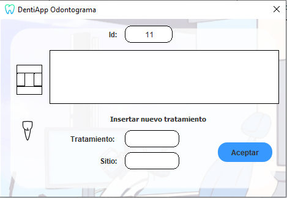

Ayuda: Odontograma
Los siguientes pasos le guiarán a través del proceso de añadir
un tratamiento al diente de un paciente:
- Añadir tratamiento: Desde la pantalla,
añada el tratamiento a añadir utilizando el campo de texto provisto (Tratamiento).
- Añadir sitio: Después de especificar el tratamiento,
añada el sitio del diente donde se ha realizado el tratamiento (arriba, abajo, centro, derecha, izquierda).
- Aceptar: Una vez que haya añadido el tratamiento y el sitio,
pulse el botón "Aceptar" para añadirlo al odontograma del paciente.

Si tiene alguna pregunta o necesita ayuda adicional,
no dude en comunicarse con nosotros.